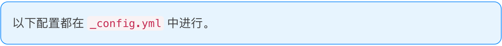
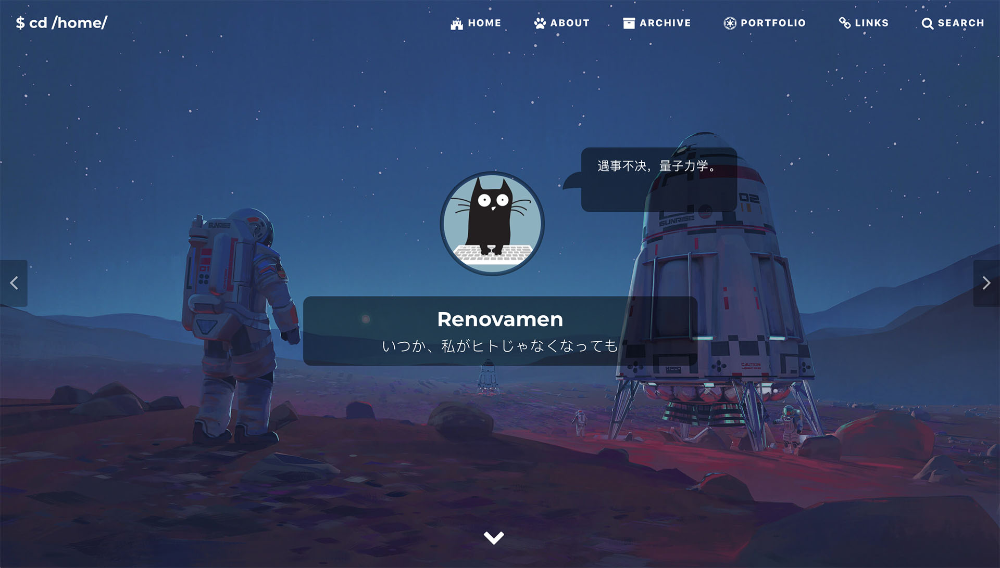

这大概是一篇文档
Github: Renovamen/jekyll-theme-gungnir
在 Huxpro/huxpro.github.io 的基础上瞎改的的主题，同时照搬借鉴了很多其他主题的代码和设计，包括但不限于 mashirozx/Sakura、kitian616/jekyll-TeXt-theme、Fechin/hexo-theme-diaspora、liuzc/LeaveIt 等（这么看来似乎也没多少东西是我自己写的了，逃）。
Gungnir，冈格尼尔，北欧神话中主神奥丁使用的用世界树树枝做成的武器，和本主题并没有什么关系但我就是用了这个名字。
安装
从 GitHub 克隆项目：
git clone https://github.com/Renovamen/jekyll-theme-gungnir.git
cd jekyll-theme-gungnir
本地运行主题需要参考这里安装 Ruby 和 Jekyll。然后安装依赖包：
bundle config set path 'vendor/bundle'
bundle install
然后即可本地预览：
bundle exec jekyll serve --watch
如果想要改动代码，你可能需要 Node.js，并安装 Grunt（用于压缩 js 文件）：
npm install
然后：
npm run dev
配置
以下配置都在 _config.yml 中进行。
网站配置
title: Renovamen # 标题
SEOTitle: Renovamen's blog # SEO 标题
description: Hmm, interesting blog. # 描述
keyword: "blog, personal website" # 关键词
url: "https://renovamen.ink" # 域名
baseurl: "" # 根路径。比如网站地址为 'https://renovamen.ink/blog'，则该项应为 '/blog'
avatar: "img/header-avatar.jpeg" # 首页头像路径
主题风格
theme_style:
highlight: # 代码高亮主题
alert: # 提示风格
post_preview: # 首页文章列表显示风格
代码高亮
代码高亮渲染用 Highlight.js 代替了 Rouge。默认的代码高亮大概长这样：
import food
class Dragon:
def __init__(self, happiness):
self.happiness = happiness
def code(self):
""" just code """
self.happiness -= 60
def eat(self, n)
# just eat
self.happiness += n * food.size
me = Dragon(100)
while True:
me.code()
me.eat(10)
点击显示编程语言的标签可以使代码块全屏，还有光标所在行高亮效果。如果你发现这两点跟 Sakura 主题很像，那么没错这部分的代码就是从它那搬过来的…
代码高亮的默认主题为 dark，还有一个 light 主题可选：
highlight: # "dark" (default), "light"
代码高亮的样式文件在 _sass/highlight 目录下，可以自行调整样式，或者直接引用 highlight.js 自带的一堆主题。
提示
支持在 Markdown 中使用提示样式以呈现一些警告，这里是使用方法。指定提示风格：
alert: # "flat" (default), "modern"
默认为 flat，长这样。modern 风格长这样：

首页文章列表
首页文章列表是否显示特征图片，image 为显示（默认），text 为不显示：
post_preview: # "image" (default), "text"
image：

text：
社交链接
sns:
github_username: # Github
weibo_username: # 微博
zhihu_username: # 知乎
twitter_username: # 推特
facebook_username: # Facebook
linkedin_username: # 领英
email_address: # 邮件地址
填入用户名或用户 ID 后，社交链接会出现在首页封面和 About 页上。
导航菜单
一级菜单的配置如下：
menus:
- title: Home
font: fab fa-fort-awesome
url: /
- title: Archive
font: fas fa-archive
url: /archive/
需要填入每个页面的名称、路径和图标。图标库使用了 Font Awesome，可以在这里查找图标。
如果要添加二级菜单，则需要在需要添加二级菜单的一级菜单下添加 submenus 关键字，然后在 submenus 下填入每个二级菜单页面的名称、路径和图标：
menus:
- title: About
font: fas fa-paw
submenus:
- title: Me
font: fas fa-user-astronaut
url: /about/
- title: Theme
font: fas fa-meteor
url: /theme/
评论
comment:
provider: # false (default), "disqus", "gitalk", "valine"
支持三种评论系统：Disqus、Gitalk 和 Valine。需要在 provider 中填入想要启用的评论系统的名字，如果不想用启用评论就填 false 或不填。
Disqus
在 Disqus 申请一个自己网站的 Disqus，然后把 shortname 填入 disqus_username：
comment:
provider: disqus
disqus_username: # Disqus shortname
Gitalk
注册一个 Github Application 并搞到 Client ID 和 Client Secret，然后填入对应信息：
comment:
provider: gitalk
gitalk:
clientID: # Github Application Client ID
clientSecret: # Github Application Client Secret
repo: # 用来放评论的 Github 仓库
owner: # 上述 Github 仓库的拥有者 ID
admin:
- 管理员1
- 管理员2
- ...
可以参考 Gitalk 文档。
Valine
按照 Valine 文档 在 LeanCloud 注册应用，然后填入 App ID 和 App Key：
comment:
provider: valine
valine:
appID: # LeanCloud App ID
appKey: # LeanCloud App Key
站点统计
支持谷歌统计和百度统计。
百度统计
搞到百度统计的统计代码并填入对应位置：
analytics:
ba_track_id: # 百度统计代码
谷歌统计
搞到谷歌统计的跟踪 ID 并填入对应位置：
analytics:
ga_track_id: 'G-ZYM02DSEHS' # 谷歌统计跟踪 ID
CDN 源
cdn: # "jsdelivr" (default), "bootcdn", "unpkg", "cdnjs"
默认使用 jsDelivr 作为所有引用的开源库的 CDN 源，也可以把 CDN 源配置为 BootCDN、unpkg 或 cdnjs。可以在 _data/cdn.yml 中看到所有 CDN 地址。
Markdown 附加功能
math:
enable: # 是否对所有文章启用公式渲染
# false (default), true
engine: # 公式渲染引擎
# "katex" (default), "mathjax"
chart: # 是否启用 Chart.js：false (defaule), true
mermaid: # 是否启用 mermaid：false (default), true
emoji-plus: # 是否启用附加表情：false (default), true
这里是具体说明。
一言
hitokoto: true # default: false
将 hitokoto 设为 true 可以开启首页的一言气泡，将鼠标悬浮在头像上气泡就会显示出来：

页面
首页
在 index.html 的 Front-matter 中设置：
description: # 想在首页显示的一句话
header-img:
- url: # 首页封面图路径1
mask: # 封面图1的遮罩（可选），格式：rgba(40, 57, 101, .4)
- url: # 首页封面图路径2
mask: # 封面图1的遮罩（可选）
在首页点击封面图左右两边的按钮可以在多图片之间进行切换。需要按上述格式在 header-img 下填入每张封面图的路径和遮罩的 RGB 数值（可选）。遮罩是指在封面图上盖一层半透明的颜色，如果图片比较复杂导致文字显示得不够清楚，可以考虑加个遮罩。
About
参考一下本站 About 页面 和它的 Front-matter 大概就知道怎么改了？
Links
参考一下本站 Links 页面 和它的 Front-matter 大概就知道怎么改了？（复读 *1）
如果没有指定某个链接的头像，那么会显示默认头像（img/links/default.jpg）。
如果想在该页面开启评论，需要在 _config.yml 中启用评论并在该页的 Front-matter 中设 comment: true。
内容
文章
把要发布的文章放在 _posts/ 文件夹中，文件名格式为 年-月-日-标题.md，然后配置其 YAML Front-matter：
---
layout: post
title: # 文章标题
subtitle: # 副标题
author: # 作者名称，默认为网站名称
header-img: # 文章封面图
header-mask: # 封面图遮罩，格式：rgba(40, 57, 101, .4)
header-style: text # 如果不想该文章显示封面图，就需要加这一项
catalog: # 是否显示目录：false (default), true
math: # 是否开启数学公式渲染
tags: # 标签
- 标签1
- 标签2
- ...
---
其中 header-img 会同时显示在首页和文章页。math 的配置可以参考这里。
Markdown 附加功能
数学公式渲染
支持使用 Mathjax 或 Katex 来在文章中渲染数学公式。
Katex 渲染速度快于 Mathjax（可以参考这里），但支持的 Tex 公式少于 Mathjax（这里是 Katex 支持的公式列表）。
如果 _config.yml 中 math.enable: false，则只有 Front-matter 中添加了 mathjax: true 的文章才会开启公式渲染：
---
layout: post
mathjax: true
---
否则所有文章（包括 post 和 keynote）中都会开启此功能。
示例：
Inline math: \(E = mc^2\)
Display math:
\[i\hbar\frac{\partial \psi}{\partial t} = \frac{-\hbar^2}{2m} ( \frac{\partial^2}{\partial x^2} + \frac{\partial^2}{\partial y^2} + \frac{\partial^2}{\partial z^2} ) \psi + V \psi.\]$$ E = mc^2 $$
$$
i \hbar \frac{\partial \psi}{\partial t}
= \frac{-\hbar^2}{2m} ( \frac{\partial^2}{\partial x^2} + \frac{\partial^2}{\partial y^2} + \frac{\partial^2}{\partial z^2} ) \psi + V \psi
$$
图表
Chart.js
使用了 Chart.js 以在文章中加入可交互的图表。可以参考 Chart.js 文档来创建表格。
示例：
{
"type": "bar",
"data": {
"labels": ["Red", "Blue", "Yellow", "Green", "Purple", "Orange"],
"datasets": [{
"label": "# of Votes",
"data": [12, 19, 3, 5, 2, 3],
"backgroundColor": [
"rgba(255, 99, 132, 0.2)",
"rgba(54, 162, 235, 0.2)",
"rgba(255, 206, 86, 0.2)",
"rgba(75, 192, 192, 0.2)",
"rgba(153, 102, 255, 0.2)",
"rgba(255, 159, 64, 0.2)"
],
"borderColor": [
"rgba(255, 99, 132, 1)",
"rgba(54, 162, 235, 1)",
"rgba(255, 206, 86, 1)",
"rgba(75, 192, 192, 1)",
"rgba(153, 102, 255, 1)",
"rgba(255, 159, 64, 1)"
],
"borderWidth": 1
}]
},
"options": {
"scales": {
"yAxes": [{
"ticks": {
"beginAtZero": true
}
}]
}
}
}
```chart
{
"type": "bar",
"data": {
"labels": ["Red", "Blue", "Yellow", "Green", "Purple", "Orange"],
"datasets": [{
"label": "# of Votes",
"data": [12, 19, 3, 5, 2, 3],
"backgroundColor": [
"rgba(255, 99, 132, 0.2)",
"rgba(54, 162, 235, 0.2)",
"rgba(255, 206, 86, 0.2)",
"rgba(75, 192, 192, 0.2)",
"rgba(153, 102, 255, 0.2)",
"rgba(255, 159, 64, 0.2)"
],
"borderColor": [
"rgba(255, 99, 132, 1)",
"rgba(54, 162, 235, 1)",
"rgba(255, 206, 86, 1)",
"rgba(75, 192, 192, 1)",
"rgba(153, 102, 255, 1)",
"rgba(255, 159, 64, 1)"
],
"borderWidth": 1
}]
},
"options": {
"scales": {
"yAxes": [{
"ticks": {
"beginAtZero": true
}
}]
}
}
}
```
注意：json 中的 key 值一定要加引号，否则会渲染出错。
mermaid
使用了 mermaid 以在文章中加入流程图、状态图、时序图、甘特图等。可以参考 mermaid 文档来创建图。
示例：
classDiagram
Animal <|-- Duck
Animal <|-- Fish
Animal <|-- Zebra
Animal : +int age
Animal : +String gender
Animal: +isMammal()
Animal: +mate()
class Duck{
+String beakColor
+swim()
+quack()
}
class Fish{
-int sizeInFeet
-canEat()
}
class Zebra{
+bool is_wild
+run()
}
```mermaid
classDiagram
Animal <|-- Duck
Animal <|-- Fish
Animal <|-- Zebra
Animal : +int age
Animal : +String gender
Animal: +isMammal()
Animal: +mate()
class Duck{
+String beakColor
+swim()
+quack()
}
class Fish{
-int sizeInFeet
-canEat()
}
class Zebra{
+bool is_wild
+run()
}
```
标签
消息标签
`消息标签`{:.info}
成功标签
`成功标签`{:.success}
警告标签
`警告标签`{:.warning}
错误标签
`错误标签`{:.error}
提示
消息提示文案
消息提示文案
{:.info}
成功提示文案
成功提示文案
{:.success}
警告提示文案
警告提示文案
{:.warning}
错误提示文案
错误提示文案
{:.error}
表情
emoji
使用了 jemoji 插件以在文章中插入 emoji，需要手动安装这个插件：
gem install jemoji
从这里可以看到 Github Pages 上自带 jemoji 插件。这里是所有 emoji 的代码。
示例：


:smile: :smirk: :racehorse: :wolf:
附加表情
也可以在文章中插入其他表情，目前支持 Bilibili 的小电视表情 斜眼笑（效果出乎意料的好）。
示例：
斜眼笑 doge 白眼
`斜眼笑`{:.emoji-plus} `doge`{:.emoji-plus} `白眼`{:.emoji-plus}
附录是所有支持的小电视表情和它们对应的代码，表情源文件来源于这里。
图片注释
这是一张图片

这是一张图片
{:.desc}
用到的开源库
CSS
JavaScript
- jQuery
- ScrollReveal（图片模式下文章列表上浮效果，About 页面的时间轴上浮效果）
- Tocbot（文章目录）
- AnchorJS（文章锚点）
- Gitalk（Gitalk 评论）
- Valine（Valine 评论）
- Chart.js（图表）
- mermaid（图表）
- MathJax（公式渲染）
- Katex （公式渲染）
- hightlight.js （代码高亮渲染）
- hightlight-line-number.js （给 hightlight.js 生成的代码块加行号的插件）
- Simple-Jekyll-Search（搜索）
- fastclick（解决移动设备上的点击延迟问题）
附录
白眼 `白眼`{:.emoji-plus}
|
鄙视 `鄙视`{:.emoji-plus}
|
闭嘴 `闭嘴`{:.emoji-plus}
|
馋 `馋`{:.emoji-plus}
|
打脸 `打脸`{:.emoji-plus}
|
大哭 `大哭`{:.emoji-plus}
|
大佬 `大佬`{:.emoji-plus}
|
呆 `呆`{:.emoji-plus}
|
点赞 `点赞`{:.emoji-plus}
|
调皮 `调皮`{:.emoji-plus}
|
发财 `发财`{:.emoji-plus}
|
发怒 `发怒`{:.emoji-plus}
|
尴尬 `尴尬`{:.emoji-plus}
|
鼓掌 `鼓掌`{:.emoji-plus}
|
害羞 `害羞`{:.emoji-plus}
|
黑人问号 `黑人问号`{:.emoji-plus}
|
坏笑 `坏笑`{:.emoji-plus}
|
惊吓 `惊吓`{:.emoji-plus}
|
可爱 `可爱`{:.emoji-plus}
|
抠鼻子 `抠鼻子`{:.emoji-plus}
|
困 `困`{:.emoji-plus}
|
流鼻血 `流鼻血`{:.emoji-plus}
|
流汗 `流汗`{:.emoji-plus}
|
腼腆 `腼腆`{:.emoji-plus}
|
难过 `难过`{:.emoji-plus}
|
呕吐 `呕吐`{:.emoji-plus}
|
亲亲 `亲亲`{:.emoji-plus}
|
色 `色`{:.emoji-plus}
|
生病 `生病`{:.emoji-plus}
|
生气 `生气`{:.emoji-plus}
|
睡着 `睡着`{:.emoji-plus}
|
思考 `思考`{:.emoji-plus}
|
偷笑 `偷笑`{:.emoji-plus}
|
吐血 `吐血`{:.emoji-plus}
|
微笑 `微笑`{:.emoji-plus}
|
委屈 `委屈`{:.emoji-plus}
|
无奈 `无奈`{:.emoji-plus}
|
笑哭 `笑哭`{:.emoji-plus}
|
斜眼笑 `斜眼笑`{:.emoji-plus}
|
疑问 `疑问`{:.emoji-plus}
|
晕 `晕`{:.emoji-plus}
|
再见 `再见`{:.emoji-plus}
|
抓狂 `抓狂`{:.emoji-plus}
|
doge `doge`{:.emoji-plus}
|
Ducumentation
Github: Renovamen/jekyll-theme-gungnir
Derived from Huxpro/huxpro.github.io. Some of the designs and code are borrowed from other themes, including but not limited to mashirozx/Sakura, kitian616/jekyll-TeXt-theme, Fechin/hexo-theme-diaspora, liuzc/LeaveIt, et al.
Gungnir is the spear of the god Odin in Norse mythology, made from the wood of the world tree Yggdrasil. It has nothing to do with this theme, but I still use this name.
Installation
Clone the project from Github:
git clone https://github.com/Renovamen/jekyll-theme-gungnir.git
cd jekyll-theme-gungnir
To run the theme locally, Ruby and Jekyll should be installed firstly, refer to here for details. Then you could install the dependencies:
bundle config set path 'vendor/bundle'
bundle install
Then you could start the development server and preview the blog by:
bundle exec jekyll serve --watch
To modify the source code of the theme, you may need to install Grunt (for compressing js files):
npm install
Then:
npm run dev
Configuration
All the following options should be configured in _config.yml.
Site Settings
title: Renovamen # title of your site
SEOTitle: Renovamen's blog # SEO title of your site
description: Hmm, interesting blog. # description of your site
keyword: "blog, personal website" # keywords of your site
url: "https://renovamen.ink" # URL of your site
baseurl: "" # Base URL of your site. If you site is hosted on 'https://renovamen.ink/blog', it should be '/blog'
avatar: "img/header-avatar.jpeg" # path of the avatar showing on home page
Theme Style
theme_style:
highlight: # syntax highlighting theme
alert: # style of alerts
post_preview: # style of the post list showing on home page
Highlight
Highlight.js instead of Rouge is used as syntax highlighter. The default syntax highlighting theme of this blog looks like this:
import food
class Dragon:
def __init__(self, happiness):
self.happiness = happiness
def code(self):
""" just code """
self.happiness -= 60
def eat(self, n)
# just eat
self.happiness += n * food.size
me = Dragon(100)
while True:
me.code()
me.eat(10)
Click the span in the upper-right corner to make the code block full screen.
The default highlighting theme is dark, you can also switch it to light:
highlight: # "dark" (default), "light"
Highlighting stylesheets could be found here. You can also modify them to create your own theme, or just import the stylesheets provided by Highlight.js.
Alert
Showing alerts in articles is supported, refer to here for more information about the usages. You can specify the style of alerts:
alert: # "flat" (default), "modern"
The default style is flat, like this. modern style alerts look like this：
Post List
image (default) means showing featured image of each article on home page, while text means showing text only:
post_preview: # "image" (default), "text"
image：
text：
Social Network
sns:
github_username: # Github
weibo_username: # Weibo
zhihu_username: # Zhihu
twitter_username: # Twitter
facebook_username: # Facebook
linkedin_username: # Linkedin
email_address: # Email Address
Links of your social networks will be shown on home page and about page.
Navigation
Configuration of the first level menu is like this:
menus:
- title: Home
font: fab fa-fort-awesome
url: /
- title: Archive
font: fas fa-archive
url: /archive/
You should specify the name, URL and icon of each page. Font Awesome is used as icon set, you can search for icons here.
Use key submenus to add the second level menu:
menus:
- title: About
font: fas fa-paw
submenus:
- title: Me
font: fas fa-user-astronaut
url: /about/
- title: Theme
font: fas fa-meteor
url: /theme/
Comment
comment:
provider: # false (default), "disqus", "gitalk", "valine"
Disqus, Gitalk and Valine are supported as third party comment systems. You should specify the name of your prefer comment system or use false to disable comments.
Disqus
Apply for a shortname on Disqus, then:
comment:
provider: disqus
disqus_username: # Disqus shortname
Gitalk
Register a Github Application and get the Client ID and Client Secret, then:
comment:
provider: gitalk
gitalk:
clientID: # Github Application Client ID
clientSecret: # Github Application Client Secret
repo: # Github repo for storing comments
owner: # owners of the above mentioned repo
admin:
- admin1
- admin2
- ...
Refer to the documentation of Gitalk for more information.
Valine
Create a new application on Leancloud and get the APP ID and APP Key, then:
comment:
provider: valine
valine:
appID: # LeanCloud App ID
appKey: # LeanCloud App Key
Refer to the documentation of Valine for more information.
Analytics
Google Analytics and Baidu Tongji are supported as the site analytics tools.
Baidu Tongji
Paste the code offered by Baidu Tongji here:
analytics:
ba_track_id: # your tracking code
Google Analytics
Paste the code offered by Google Analytics here:
analytics:
ga_track_id: 'G-ZYM02DSEHS' # your tracking code
CDN
cdn: # "jsdelivr" (default), "bootcdn", "unpkg", "cdnjs"
jsDelivr is used as the default CDN provider. You can also choose BootCDN, unpkg or cdnjs to be your CDN provider. All CDN URLs can be found in _data/cdn.yml.
Additional Functions for Markdown
math:
enable: # if to enable math rendering for all articles
# false (default), true
engine: # specify the math rendering engine
# "katex" (default), "mathjax"
chart: # if to enable Chart.js: false (defaule), true
mermaid: # if to enable mermaid: false (default), true
emoji-plus: # if to enable additional emoji: false (default), true
Refer to here for more information.
Hitokoto
hitokoto: true # default: false
Set hitokoto to true to enable the Hitokoto bubble on home page. The bubble will appear when you hover your mouse cursor over the avatar:
Page
Home
Switching among multiple cover images is supported. The path and the RGB value of the mask of each cover image should be specified in the Front-matter of index.html:
description: # the sentence you want to show on the home page
header-img:
- url: # path of the cover image1
mask: # RGB value of the mask of the cover image1 (optional), like: rgba(40, 57, 101, .4)
- url: # path of the cover image2
mask: # RGB value of the mask of the cover image2 (optional)
The mask is the translucent overlay placed on the cover image. It will be helpful when your cover image is so complex that your title can not stand out.
About
Just refer to the About page and its Front-matter of this site.
Links
Just refer to the Links page and its Front-matter of this site. (Repeat *1)
If any of the links’ avatar is not specified, img/links/default.jpg will be shown as the default avatar.
If you want to enable comments in this page, you should enable comments in _config.yml and set comment: true in the Front-matter of this page.
Content
Post
Create your posts (Markdown files) under _posts/ directory. The format of their filename should be year-month-day-title.md. Their YAML Front-matter should be like this：
---
layout: post
title: # title
subtitle: # subtitle
author: # author's name, defaults to the site's title
header-img: # path of the cover image
header-mask: # RGB value of the mask of the cover image, like: rgba(40, 57, 101, .4)
header-style: text # add this line if you don't want a cover image
catalog: # if to enable catalog: false (default), true
math: # if to enable math rendering
tags: # tags
- tag1
- tag2
- ...
---
It should be noted that, header-img will be shown on both home page and post page. Refer to here for the information about the configuration of math.
Additional Functions for Markdown
Math Rendering
Mathjax and Katex are supported for rendering mathematical formulas in articles.
Katex is faster than Mathjax (check it out here), but the number of Tex functions it supports is less than Mathjax (here is all functions supported by Katex).
Math rendering will only be enabled for the articles with math: true in their Front-matter when math.enable: false is set in _config.yml:
---
layout: post
math: true
---
Otherwise, this function will be enabled for all articles (including post and keynote).
Example：
Inline math: \(E = mc^2\)
Display math:
\[i\hbar\frac{\partial \psi}{\partial t} = \frac{-\hbar^2}{2m} ( \frac{\partial^2}{\partial x^2} + \frac{\partial^2}{\partial y^2} + \frac{\partial^2}{\partial z^2} ) \psi + V \psi.\]$$ E = mc^2 $$
$$
i \hbar \frac{\partial \psi}{\partial t}
= \frac{-\hbar^2}{2m} ( \frac{\partial^2}{\partial x^2} + \frac{\partial^2}{\partial y^2} + \frac{\partial^2}{\partial z^2} ) \psi + V \psi
$$
Chart and Diagram
Chart (Chart.js)
Chart.js is used to create interactive charts in articles. Refer to the documentation of Chart.js for the methods of creating charts.
Example：
{
"type": "bar",
"data": {
"labels": ["Red", "Blue", "Yellow", "Green", "Purple", "Orange"],
"datasets": [{
"label": "# of Votes",
"data": [12, 19, 3, 5, 2, 3],
"backgroundColor": [
"rgba(255, 99, 132, 0.2)",
"rgba(54, 162, 235, 0.2)",
"rgba(255, 206, 86, 0.2)",
"rgba(75, 192, 192, 0.2)",
"rgba(153, 102, 255, 0.2)",
"rgba(255, 159, 64, 0.2)"
],
"borderColor": [
"rgba(255, 99, 132, 1)",
"rgba(54, 162, 235, 1)",
"rgba(255, 206, 86, 1)",
"rgba(75, 192, 192, 1)",
"rgba(153, 102, 255, 1)",
"rgba(255, 159, 64, 1)"
],
"borderWidth": 1
}]
},
"options": {
"scales": {
"yAxes": [{
"ticks": {
"beginAtZero": true
}
}]
}
}
}
```chart
{
"type": "bar",
"data": {
"labels": ["Red", "Blue", "Yellow", "Green", "Purple", "Orange"],
"datasets": [{
"label": "# of Votes",
"data": [12, 19, 3, 5, 2, 3],
"backgroundColor": [
"rgba(255, 99, 132, 0.2)",
"rgba(54, 162, 235, 0.2)",
"rgba(255, 206, 86, 0.2)",
"rgba(75, 192, 192, 0.2)",
"rgba(153, 102, 255, 0.2)",
"rgba(255, 159, 64, 0.2)"
],
"borderColor": [
"rgba(255, 99, 132, 1)",
"rgba(54, 162, 235, 1)",
"rgba(255, 206, 86, 1)",
"rgba(75, 192, 192, 1)",
"rgba(153, 102, 255, 1)",
"rgba(255, 159, 64, 1)"
],
"borderWidth": 1
}]
},
"options": {
"scales": {
"yAxes": [{
"ticks": {
"beginAtZero": true
}
}]
}
}
}
```
Note：the key in json should be with quotes, or there will be some unexpected errors…
Diagram (mermaid)
mermaid is used to create diagrams in articles. Refer to the documentation of mermaid for the methods of creating diagrams.
Example：
sequenceDiagram
Alice->>John: Hello John, how are you?
John-->>Alice: Great!
```mermaid
sequenceDiagram
Alice->>John: Hello John, how are you?
John-->>Alice: Great!
```
Tag
info
`info`{:.info}
success
`success`{:.success}
warning
`warning`{:.warning}
error
`error`{:.error}
Alert
A info alert.
A info alert.
{:.info}
A success alert.
A success alert.
{:.success}
A warning alert.
A warning alert.
{:.warning}
An error alert.
An error alert.
{:.error}
Emoji
jemoji is used to generate emojis. This plugin should be installed manually:
gem install jemoji
Here we can know that jemoji has already been installed on Github Pages. Code of all emojis can be found here.
Example:


:smile: :smirk: :racehorse: :wolf:
Image Annotation
This is an image.

This is an image.
{:.desc}
Libraries
Here are all open source libraries used by this theme.
CSS
- Bootstrap
- Font Awesome
- Font Awesome Animation (animation of icons)
JavaScript
- jQuery
- ScrollReveal (enter animation of the post list (home page) and timeline (about page))
- Tocbot (catalog of articles)
- AnchorJS (anchors of articles)
- Gitalk
- Valine
- Chart.js (charts)
- mermaid (diagrams)
- MathJax (math rendering)
- Katex (math rendering)
- Hightlight.js (syntax highlighting)
- hightlight-line-number.js (Highlight.js line numbers plugin)
- Simple-Jekyll-Search (search)
- fastclick (remove click delays on mobile browsers)
Gungnir
作诗中...